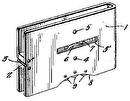
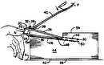

<!doctype html>

<html>

    <head>
        <meta charset="UTF-8">
        <link rel="stylesheet" type="text/css" href="../static/style.css">

        <title>US2467589</title>
    </head>

    <body>

        <p class='scrolllinks top'>
            <a href='#end'>🡇</a>
        </p>

       
       <div class='boite_info'>
           
            <span class='patentnumber'>US2467589</span>

            <span>
                
                    <span class='code_cpc'>
                        A45D29/02
                    </span>
                
            </span>

            
            <h1> Apparatus for cutting fingernails </h1>
            <div class="date_line">
                <span class='date' title="April 19, 1949">1949</span>
                
                    <span class='inventor'>
                        Evert Johansson Nils Gustaf
                        
                    </span>
                
                <span class='assignee-list'>
                    
                        <span class='assignee'>
                            Evert Johansson Nils Gustaf
                            
                        </span>
                    
                <span>
            </div>


       </div>

       
        <div class='boite_view'>

            <div class='figures'>
                
                
                    
                
                    
                
                    
                
                    
                
                    
                
                    
                
                    
                
                    
                
                    
                
                
            </div>
            <div class='legende'>

                
                <ul>
                    
                        <li    >
                            <span class='legend_number'> 2</span>cover
                        </li>
                    
                        <li    >
                            <span class='legend_number'> 3</span>slot
                        </li>
                    
                        <li    >
                            <span class='legend_number'> 4</span>cutter
                        </li>
                    
                        <li    >
                            <span class='legend_number'> 5</span>produce c fof hinges
                        </li>
                    
                        <li  class="non-consecutive"  >
                            <span class='legend_number'> 6</span>spring-pressed
                        </li>
                    
                        <li  class="non-consecutive"  >
                            <span class='legend_number'> 14</span>corner piece
                        </li>
                    
                        <li  class="non-consecutive"  >
                            <span class='legend_number'> 19</span>april
                        </li>
                    
                        <li    >
                            <span class='legend_number'> 21</span>nail-cleaner
                        </li>
                    
                        <li    >
                            <span class='legend_number'> 22</span>cover
                        </li>
                    
                        <li    >
                            <span class='legend_number'> 23</span>slot
                        </li>
                    
                        <li  class="non-consecutive"  >
                            <span class='legend_number'> 24</span>tubular cutter
                        </li>
                    
                        <li  class="non-consecutive"  >
                            <span class='legend_number'> 26</span>opening
                        </li>
                    
                        <li    >
                            <span class='legend_number'> 32</span>cover
                        </li>
                    
                        <li    >
                            <span class='legend_number'> 33</span>slot
                        </li>
                    
                        <li  class="non-consecutive"  >
                            <span class='legend_number'> 34</span>cutter
                        </li>
                    
                        <li  class="non-consecutive"  >
                            <span class='legend_number'> 467</span>johansson
                        </li>
                    
                        <li  class="non-consecutive"  >
                            <span class='legend_number'> 539</span>johansson
                        </li>
                    
                        <li  class="non-consecutive"  >
                            <span class='legend_number'> 741</span>united states patents number name date
                        </li>
                    
                        <li    >
                            <span class='legend_number'> 857</span>united states patents number name date
                        </li>
                    
                </ul>
                
            </div>
            <div class='description'>
                <!-- <h4> Description </h4> -->
                <div class='description-text'>
                    

                    <h4> Description </h4>
                    
                    
                        <p> April 19, 1949. N. G. 1E. JOHANSSON 2,467,539   </p>
                    
                        <p>  . prmm</span>wus FOR cuwwme FI<span class="highlightfromlegend legenditem2">NGERNAI<span class="highlightfromlegend legenditem467">LS File<span class="highlightfromlegend legenditem539">d Dec.</span></span></span> 21,1943 2 Sheets-Sheet 1 April 19, 1949.   </p>
                    
                        <p>  N.<span class="highlightfromlegend legenditem1"> G. E. JOHANS SON APPARAT</span>US FOR CUTTING FINGERNAILS 2 She<span class="highlightfromlegend legenditem2">ets-Sheet 2 Filed Dec.<span class="highlightfromlegend legenditem2"> 21, 1943- mm mwnma* </span>UNITED STATES, </span>PATENT OFFICE films APPARATUS CUTTING FINGERNAILS Nils Gustaf dohans son, Orrefors, Sweden- Application December 21, 1943, Serial No. 515,179 V In Sweden November 17, 1942 3, oi (oi. 30 124) The present invention relates to apparatus for cutting fingernails andhas for its objectfto produce such an apparatus which in usewill prevent thesc atte&#39;ring of .the&#39;nailfc uttings.   </p>
                    
                        <p>   Another object of the invention is t pre ate a naiTcutterof a cbmpact construction and a handy shape and inwhich the cutting&#39;means is protected insu&#39;ch mannefthatftlie apparatus can be carried&#39;in th pocket.   </p>
                    
                        <p>   A further object or the&#39;invention a nail cutter in &#39;which&#39;the&#39;hail&#39;is guidediiuring the cuttingbp&#39;erationjand the fin&#39;geretipsai&#39;e protected, &#39;so that there; will. bel&#39;1&#39;io&#34; risl{of &#39;l&#39;tt&#39;ng three embodiments of the novel nail. cutter, illustrated, by way of e&#39;xample jintheaccompanying drawings, in which: I v Q Figs: 1-6 relate to theQfirstembodirrientij ;I Fig. 1 is an endviewlof the cutter; Fig. 2 is aside View} 7 Fig.3isatop view; s v Fig. 4 is a sectional view onthe line IV.IVin Fi -5; r Fig. 5 is a sectional view.on the line AIL-Vin Fig.4;   </p>
                    
                        <p>   Fig. 6 is a sectional view on the line V I-.-,.VI in Fig. 4; fl Figs. 7 and 8 relate to the second embodiment;   </p>
                    
                        <p>  Fig. &#39;7 is a sideview of the apparatus; j   </p>
                    
                        <p>  Fig. 8 shows a section on the line a Fig. 7;   </p>
                    
                        <p>   Fig. 9 is a perspective view of the apparatus according to the third embodiment. The nail cutter according to the presentinvention, comprises, in its generalflcombinatio&#39;n, a box adapted to receive the nail cuttings&#39;a&#39;cutter mounted inside the box close to at least one section of the wall of the box, and&#39;a .slot provid&#39;ed in said wall section across the &#34;edge of the cutter, to allow the insertion of a nailfagainst the cutter and to guide the nail during the cutting operation, said wall section forr&#39;ninga guard member for the cutter. 1 I In the embodiment shown in Figs. 1-6.: the box I is of a flat square shape and has a cover 2 on one of the two flat sides. The box&<span class="highlightfromlegend legenditem2">#39;and </span>,thccover are produced of sheet metal or the like but may also be cast or presseohior instance ofBalgelite. The cover 2 is connected tot he box l&#39; by n ea<span class="highlightfromlegend legenditem2">ns is to</span> produce C fof hinges 5 and is provided with a <span class="highlightfromlegend legenditem5">spring-pressed 6 of usu</span>al type. In one of the <span class="highlightfromlegend legenditem6">short walls 15 a.</span> .slot 3 is provided which ex<span class="highlightfromlegend legenditem15">tends from the </span>cov<span class="highlightfromlegend legenditem3">er 2 to </span>the opposite flat side, viz. the bo<span class="highlightfromlegend legenditem2">ttom &#3</span>9;.of the box. The&#39;slot 3 extends also through the cover,<span class="highlightfromlegend legenditem3"> as shown in Fi</span>gs. 2 and 3. Inside the box and behind the slot 3 a cutter 4 is mounted parallel to the w<span class="highlightfromlegend legenditem3">all I5 </span>an<span class="highlightfromlegend legenditem4">d close t</span>o the same. Thus, the wall 15 forms a guard plate for the cutter. Pr<span class="highlightfromlegend legenditem15">eferably</span>, this guard wall is slightly ,coricave&#39;on the outer side, to facilitate the guid- Zing of the apparatus against the finger tip (compareFigsll and.2)l I x I Preferablythe cutter 4 is <span class="highlightfromlegend legenditem4">mounted in such way that it canfbe exchange</span>d for a new cutter when &#39;the edge has become blunt. In the embodiment shownin Figs. 1-6 the cutter 4 consists of an ndless&#39;s&#39;teel <span class="highlightfromlegend legenditem4">band one </span>edge of which is made sharp) This steel band is mountedin the box so as to form a cylinder and may be rotated to advance new portions of the edge in position behi&#39;nd the slot 3., To retain the steel band in the cylin<span class="highlightfromlegend legenditem3">drical </span>shape corner pieces or shoulders 8 are<span class="highlightfromlegend legenditem8">iprovided in the .box, which pieces are for</span>med with &#39;arcuat&#39;e bearing surfaces for the cylindrical cutter and, thus, constitute guiding members for in Figs. 1-6, this operating handle 9 consists of a milled pin co<span class="highlightfromlegend legenditem9">nnected to the cyli</span>ndrical cutter by means of a diametrical plate spring II) which by. terminal projections is removably inserted in apertures in the cutter band, the arrangement beingsuch that the cover 2 when in closed position, will hold the<span class="highlightfromlegend legenditem2"> back or</span> rear edge of the cutter against ,the bottom of the box by the aid of the operatingjmember 9 and the resilient strip H].<span class="highlightfromlegend legenditem9"> &#39;Ihus, uninten</span>tion-al rotation of the cutter is preventedgbut after opening the cover 2 it is possible, by rotating the operat<span class="highlightfromlegend legenditem2">ing memb</span>er 9, to adjust the cutter in re<span class="highlightfromlegend legenditem9">lation to the slot,</span> so that &#39;difierent portions of the cutter edge can be brought into position behind the slot as the edge of the cutter becomes dull. When the cutter has become blunt over the whole edge, the spring I0 kisily can be removed from the cutter and ins&#39;erted in a new cutter.   </p>
                    
                        <p>   .,The slot 3 and the cutter 4 may be arran<span class="highlightfromlegend legenditem3">ged in such manne</span>r in rel<span class="highlightfromlegend legenditem4">ation to </span>each other, that th Edge portion lying behind the slot, is at right.   </p>
                    
                        <p>  angles to the longitudinal direction of the slot, as illustrated by the line a-a in Fig. 3. However, the arrangement also advantageously may be such, that the edge portion lying behind the slot .forms an acute angle with the longitudinal direction of the slot, as indicated by the line bb in Fig. 3. When a cylindrical cutter is used this may be attained by arranging the plane in which the circular edge line of the cutter lies, somewhat slanting (according to the line b-b in Fig. 3), but instead the slot 3 may be inclined correspondingly.   </p>
                    
                        <p>   Th<span class="highlightfromlegend legenditem3">e box c</span>omprises internally the space H in which the nail cuttings are collected. To prevent these cuttings from falling out through the slot 3, the portion of the slot not closed by <span class="highlightfromlegend legenditem3">the cut</span>ter 4, may be closed by means of a weak res<span class="highlightfromlegend legenditem4">ilient pl</span>ate I2 provided inside the short wall (the guard plate) la and secured, preferably, to the adjacent short wall (see Figs. 4 and 6). This resilient plate l2 yields to the pressure of the nail when the nail is inserted through the slot, but then prevents the nail cuttings from falling out through the slot. Said plate I2 or a similar member needs not to be resilient but may also be firmly mounted at a distance from the internal surface of the guard plate, so that it does not prevent the cutting operation but prevents the nail cuttings from falling out.   </p>
                    
                        <p>   The nail cutter according to the invention may be combined with a nail-file 1 formed as the blade of a knife and<span class="highlightfromlegend legenditem1"> provided wi</span>th a nail-cleaner. This nail-file is mounted in such way that it can be clapped into the box, as shown in Figs. 4 and 6. For instance, the nail-file may be mounted in a corner piece 14 which may be a separate member<span class="highlightfromlegend legenditem14"> or may be forme</span>d unitarily with the adjacent corner piece 8. Also other known tool<span class="highlightfromlegend legenditem8">s may be arranged in a s</span>imilar way.   </p>
                    
                        <p>   The manner in which the nail cutter according to the invention is used will appear from the foregoing description and the drawing.   </p>
                    
                        <p>   In the embodiment shown in Figs. 7 and 8 the box 2| is of tubular shape and provided with a<span class="highlightfromlegend legenditem2"> cover</span> 22. The parts 2| and 22 are produced of <span class="highlightfromlegend legenditem22">Bakelite </span>or ot<span class="highlightfromlegend legenditem2">her like</span> materials which can be pressed or cast. The cover 22 is screwed into the tubular box. A sl<span class="highlightfromlegend legenditem22">ot 23 is </span>provided longitudinally in the cyli<span class="highlightfromlegend legenditem23">ndrical </span>wall of the box. If desired, a plurality of such slots may be provided. The external side of the cylindrical wall in the extension of the slot has an arcuate shape corresponding to the shape of the nail. The tubular cutter 24 is held between the cover an<span class="highlightfromlegend legenditem24">d a shoulder in th</span>e box. After removal of the cover the cutter can be rotated into another position and, if necessary, exchanged for a new cutter. A portion 24a of the cylindrical cutter is formed as a nail-file, and the tubular wall of the box is provided with an opening 26 in front of said nail-file, through<span class="highlightfromlegend legenditem26"> which open</span>ing the nail may be inserted against the nail-file. A nail-cleaner 21 may be provided on the externa<span class="highlightfromlegend legenditem21">l side of the bo</span>ttom of the box. When clapped down the cleaner rests in a recess in the bottom.   </p>
                    
                        <p>   In the embodiment shown in Fig. 9 the box 3| is in the shape of an oblong hollow han<span class="highlightfromlegend legenditem3">dle pr</span>ovided with a cover 32. A slot 33 is provided in the end sur<span class="highlightfromlegend legenditem32">face, viz</span>. t<span class="highlightfromlegend legenditem33">he botto</span>m surface of the box. A cutter 34 consisting of a square plate, is mou<span class="highlightfromlegend legenditem34">nted in a </span>recess in the bottom end wall of the box, close to the slot. The recess may extend through the whole width of the handle, and the cutter may be held by friction in the recess 4 or by spring-pressed locking means or<span class="highlightfromlegend legenditem4"> the like</span>.   </p>
                    
                        <p>  What I claim is:   </p>
                    
                        <p>   1. An apparatus for cutting fingernails, comprising in combination, a closed box for receiving the nail cuttings, a cutter mounted inside the box close to one section of the wall of the box, said wall section being provided with a slot across the edge of said cutter, to allow the insertion of a nail against the cutter, the edges of said slot in said wall section guiding the nail during the cutting operation, and said wall section forming a guard member for the cutter.   </p>
                    
                        <p>   2. An apparatus for cutting fingernails, comprising in combination, a box for receiving the nail cuttings, a cutter in the form of an endless steel band movably mounted in the box and on a part of its length lying close to at least one section of the wall of the box, said wall section being provided with a slot across the edge of said cutting steel band, to allow the insertion of a nail against the cutter and to guide the nail during the cutting operation, said wall section forming a guard member for the cutter, and operating means connected to said steel band, to advance new portions of the same into position behind the slot.   </p>
                    
                        <p>   3. An apparatus for cutting fingernails, comprising in combination, a closed box for receiving the nail cuttings, a movable cutter mounted inside the box close to one section of the wall of the box, said wall section being provided with a slot, said slot and the portion of the cutter edge lying behind the slot forming an acute angle with each other, the slot allowing insertion of a nail against the cutter and guiding the nail during the cutting operation, said wall section forming a guard member for the cutter, and means for moving the cutter to place different portions thereof adjacent the slot.   </p>
                    
                        <p>   4. An apparatus for cutting fingernails, comprising in combination, a fiat square box for receiving the nail cuttings, a cover on one of the two fiat sides of the box, a movable cutter mounted inside the box close to at least one of the short sides of the box, the edge of the cutter extending substantially in the same direction as the fiat sides of the box, the short side of the box being provided with a slot in front of the cutter, which slot extends from the cover to the opposite fiat side, to allow the insertion of a nail against the cutter and to guide the nail during the cutting operation, said slotted short side forming a guard member for the cutter, and means for moving the cutter to place diiIerent portions thereof adjacent the slot.   </p>
                    
                        <p>   5. An apparatus for cutting fingernails, comprising in combination, a fiat square box for receiving the nail cuttings, a cover on one of the two fiat sides of the box, a cylindrical rotatable cutter mounted inside the box close to at least one of the short sides of the box, the edge of the cutter extending substantially in the same direction as the fiat sides of the box, corner pieces in said square box, formed as guide members for said cylindrical cutter, the short side of the box having a slot in front of the cutter, which slot extends from the cover to the opposite fiat side, to allow the insertion of a nail against the cutter and to guide the nail during the cutting operation, said slotted short side forming a guard member for the cutter, and operating means connected to said cylindrical cutter, to advance new portions of the same into position behind the slot.   </p>
                    
                        <p>   6. An apparatus for cutting fingernails, comprising in combination, a fiat square box for receiving the nail cuttings, a cover on one of the and to guide the nail during the cutting operation, said slotted short side forming a guard member for the cutter, a central handle for operating said cylindrical cutter, to advance new portions of the same into position behind the slot, and a plate spring diametrically provided in said cylindrical cutter in connection to the same and to the handle, the cover when in closed position holding the back edge of the cutter against the bottom of the box by means of said handle and plate spring.   </p>
                    
                        <p>   7. An apparatus for cutting fingernails, comprising in combination, a closed box for receiving the nail cuttings, a cutter mounted inside the box close to at least one section of the wall of the box, this wall section being slightly concave on the external side, and said wall section of the box having a slot in front of the cutter, which slot ex- 6 tends across the edge of the cutter, to allow the insertion of a nail against the cutter and designed to guide the nails during the cutting operation, said slotted wall section forming a guard member for the cutter.   </p>
                    
                        <p>   8. An apparatus for cutting fingernails, comprising in combination, a closed box in the shape of an oblong handle for receiving the nail cuttings, a cutter mounted inside the box close to one of the end walls of the box, and said end wall having a slot across the edge of said cutter, to allow the insertion of a nail against the cutter and designed to guide the nail during the cutting operation, said end wall forming a guard member for the cutter.   </p>
                    
                        <p>  NILS GUSTAF EVERT JOHANSSON.   </p>
                    
                        <p>  REFERENCES CITED The following references are of record in the file of this patent:   </p>
                    
                        <p>  UNITED STATES PATENTS Number Name Date 741,857<span class="highlightfromlegend legenditem741"> Welker<span class="highlightfromlegend legenditem857"> Oct. 20, 1903 982,201 Cowing Jan. 17, 1</span></span>911 1,163,455 Randolph Dec. 7, 1915 1,498,156 Drew June 17, 1924 1,727,239 Koepp Sept. 3, 192<span class="highlightfromlegend legenditem19">9 </p>
                    
                </div>
            </div>
        </div>


        <div class='citations'>
            <h4>Brevets cités</h4>
            <div class='listcited'>
                
                
                    <a href="US1727239.html" class='citedlinkbox'>
                        <div class='citedimgwrapper'>
                            
                            
                            
                        </div>
                        <div class='citedinfowrapper'>
                            <h5>Finger-nail shears</h5>
                            <div><span class='date'>1929</span>
                            <span class='inventor'>Koepp Albert H.</span></div>
                        </div>
                    </a>
                
            </div>

            <h4>Brevets citants</h4>
            <div class='listcitedby'>
                
                
                    <a href="US7194807.html" class='citedlinkbox'>
                        <div class='citedimgwrapper'>
                            
                            
                            
                        </div>
                        <div class='citedinfowrapper'>
                            <h5>Sanitary nail clippers</h5>
                            <div><span class='date'>2007</span>
                            <span class='inventor'>Weiss Edward</span></div>
                        </div>
                    </a>
                
                    <a href="US4564034.html" class='citedlinkbox'>
                        <div class='citedimgwrapper'>
                            
                            
                            
                        </div>
                        <div class='citedinfowrapper'>
                            <h5>Nail clipper holder</h5>
                            <div><span class='date'>1986</span>
                            <span class='inventor'>Mackel Nathaniel T.</span></div>
                        </div>
                    </a>
                
                    <a href="US20060016079.html" class='citedlinkbox'>
                        <div class='citedimgwrapper'>
                            
                            
                            
                        </div>
                        <div class='citedinfowrapper'>
                            <h5>Sanitary nail clippers</h5>
                            <div><span class='date'>2006</span>
                            <span class='inventor'>Weiss Edward</span></div>
                        </div>
                    </a>
                
            </div>
        </div>

        <p class='navlinks'>
            <a href="https://www.google.com/patents/US2467589">google patent 🔗</a>
            <a href='../list.html'>back to the list 🡄</a>
        </p>

        <p class='scrolllinks end'>
            <a name="end" href='#top'> 🡅 </a>
        </p>
    </body>

</html>